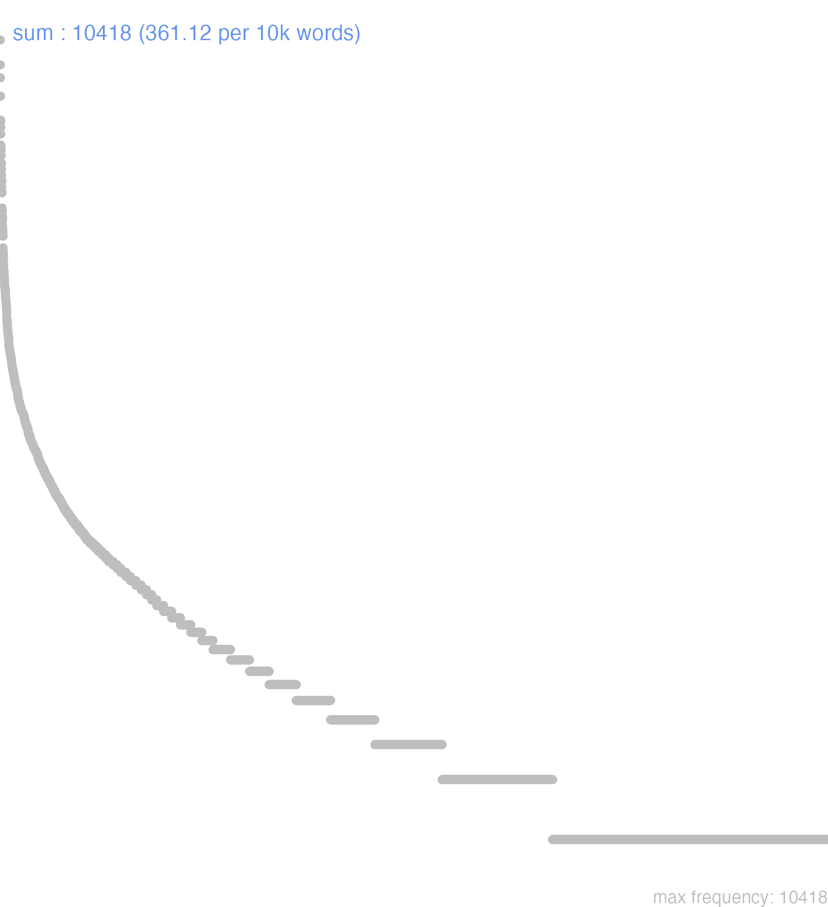

166 sum
166.0.0.1 bases lexicais
id: http://lila-erc.eu/data/id/lemma/126689
classe: verbo
paradigma: irregular
outras grafias: esum
variantes do lema:
esum, sum presente | indicativo | 1ª pessoa singular | voz ativa
esse, escere presente | infinitivo | ativo
erit, escet futuro | indicativo | 3ª pessoa singular | voz ativa
fui pretérito perfeito | indicativo | 1ª pessoa singular | voz ativa
futurum particípio futuro | nominativo neutro singular
fŭī
ĕs
estō
166.0.0.2 dicionários tradicionais
eram
imperf. de sum.
erō -ĭs -ĭt
fut. imperf. de sum.
escit
= erit. fut. imperf. de sum Lucr. 1, 619.
escunt
= erunt, fut. imperf. de sum Cíc. leg. 2, 60.
esse
inf. pres. de sum e de edo.
est
3ª pess. sing. do ind. pres. de sum e de edo 1.
esto
2ª e 3ª pess. sing. imperativo fut. de sum.
fŏrĕ
inf. fut. de sum = futurum esse.
forem -ēs -et e forent
= essem, esses, esset e essent. imperf. do subj. de sum.
fuam fuas, fuat
pres. subj. arc. de sum = sim, sis, sit.
fuĕram
m. q. perf. Ind. de sum.
fuĕrō
fut. perf. do ind. de sum.
siem sies, siet
= sim, sis, sit, v. sum.
sum es, esse, fuī
v. de existência e copulativo, intr.
Obs.: Constrói-se como intr. absoluto; com predicativo; locativo; com abl. com in; com gen.; com dat.; com duplo dat.; com acus. com in. Obs.: Formas arcaicas: siem, sies, siet, sient Plaut. Amph. 57; Lucr. 3, 101, etc.: fuam, fuas, fuat, fuant Plaut. Bac. 156; Plaut. Amph. 985, etc. = subj. pres.
imperf. de sum.
erō -ĭs -ĭt
fut. imperf. de sum.
escit
= erit. fut. imperf. de sum Lucr. 1, 619.
escunt
= erunt, fut. imperf. de sum Cíc. leg. 2, 60.
esse
inf. pres. de sum e de edo.
est
3ª pess. sing. do ind. pres. de sum e de edo 1.
esto
2ª e 3ª pess. sing. imperativo fut. de sum.
fŏrĕ
inf. fut. de sum = futurum esse.
forem -ēs -et e forent
= essem, esses, esset e essent. imperf. do subj. de sum.
fuam fuas, fuat
pres. subj. arc. de sum = sim, sis, sit.
fuĕram
m. q. perf. Ind. de sum.
fuĕrō
fut. perf. do ind. de sum.
siem sies, siet
= sim, sis, sit, v. sum.
sum es, esse, fuī
v. de existência e copulativo, intr.
Obs.: Constrói-se como intr. absoluto; com predicativo; locativo; com abl. com in; com gen.; com dat.; com duplo dat.; com acus. com in. Obs.: Formas arcaicas: siem, sies, siet, sient Plaut. Amph. 57; Lucr. 3, 101, etc.: fuam, fuas, fuat, fuant Plaut. Bac. 156; Plaut. Amph. 985, etc. = subj. pres.
1 I-Sent. próprio Ser, existir Cic. Fam. 11, 21, 1; Cíc. Fam. 6, 18, 4; Cíc. Phil. 5, 42; Cíc. Rep. 1, 12; Cíc. Opt. 15.
2 I-Sent. próprio Estar, viver, morar com locativo ou abl. com in:
3 I-Daí: Ser de, ser próprio de, pertencer a Cíc. C. M. 20; Cíc. Fam. 5, 16, 5; Cíc. Verr. 1, 66.
4 II-Empregos especiais: Impessoal: Haver Cés. B. Gal. 1, 12, 1; Cíc. Fam. 1, 9, 25.
5 II-Empregos especiais: Ser avaliado, custar, valer Cíc. Com. 33; Cíc. Of. 3, 92.
6 II-Empregos especiais: Ter, possuir Cíc. Verr. 3, 168; Cíc. Phil. 2, 77; Cés. B. Gal. 5, 40, 7.
7 II-Empregos especiais: Servir de, causar, dar, trazer T. Lív. 4, 13, 2; Cíc. Verr. 5, 100.
8 II-Empregos especiais: Tratar de, versar sobre, compor-se de Cíc. Tusc. 1, 24; Cíc. Verr. 5, 110; Cíc. De Or. 3, 183.
[EXEMPLOS]
2
esse apud aliquem Cíc. Rep. 1, 21 «estar em casa de alguém»; esse cum aliquo Cíc. Br. 309 «viver estar com alguém»; Cíc. Verr. 2, 100.
sunto
imperat. fut. de sum.
1 Ĕs
2ª pess. do ind. Pres. ou do imper. de sum.
2 sīs
2ª pess. do sing. do subj. pres. de sum.
Sŭm ĕs fŭī ēssĕ
v. substan. da m. familia q. o gr. εἰμί, o sancr. asmi, o hebr. יש, iéch.
v. substan. da m. familia q. o gr. εἰμί, o sancr. asmi, o hebr. יש, iéch.
1 durar;
1 sêr, existir com respeito ás pessôas e ás coisas;
1 no pret. perf. ter vivido, não existir já;
1 viver;
2 achar-se em;
2 estar com alguem;
2 estar;
2 morar, residir;
2 viver com, ter tracto. Cic. Ov.;
3 ir, chegar, vir;
4 dar-se, acontecer, succeder;
4 Est ut, ou com infin. é lícito ou permittido que;
4 Est ut, ou com infin. é possível que;
4 Est ut, ou com infin. é que, da-se o caso que;
4 Est ut, ou com infin. póde sêr que;
4 sêr com respeito a um facto, ser realmente, ser verdade;
4 sêr, vir, chegar o tempo;
5 estar para ou com tenção de;
5 sêr descendente, oriundo;
5 sêr este ou aquelle, d’esta ou d’aquella naturesa, estar n’este ou n’aquelle estado com respeito ás pessoas e ás coisas;
5 sêr provido ou dotado de;
6 Com o part. pass. forma os tempos compostos dos verbos passivos e depoentes; e o presente toma então a significação de preterito perfeito;
7 sêr estimado, avaliado;
7 valer, custar;
8 occupar-se em, com, cuidar em, tractar de;
8 ser de alguem, ser propriedade de, pertencer a, ser concernente, dizer respeito a, convir;
8 sêr por alguem, estar do lado de, favorecer;
9 sêr para, servir de, trazer, causar;
10 ser capaz de, proprio para, bom para;
10 ser sufficiente para, bastar para;
11 Phrases diversas.
[EXEMPLOS]
1
ægritudine, id est miseria Cic Pelo pezar, i. é, pela desgraça
alter erit tum Tiphys Virg Haverá então um segundo Typhis
amor fuit quum… Ov Foi-se, não existe mais o amor quando… Ved. Vivo
dum ero Cic Em quanto eu existir, ou viver
eæ res quæ sunt Cic As coisas que existem realmente
ego sum qui sum Hier Eu sou quem sou
erat mons saxeus inter… Sall Havia uma penedia entre…
est genus quoddam hominum… Nep Há uma classe de homens…
est locus… Enn. Sall Existe um logar…
est por sunt quibus… Prop Há homens a quem…
est quod uisam domum Plaut Preciso ir a casa
fuimus Troes, fuit Ilium et… Virg Estamos perdidos os Troianos, está perdido Ílio, e…
hæc sunt quæ clamores efficiunt Cic São estas as coisas que levantam os clamores
hoc est Sall. Plin Isto é, convem a saber
homo nequissimus omnium qui sunt, qui fuerunt, qui futuri sunt Cic O homem mais perverso de quantos há, houve, e haverá
id est Cic Isto é, convem a saber
nolite existimare me nullum fore Cic Não julgueis que eu não hei de existir mais
pæne tibi fuit Phronesium Ter Quasi que ficaste sem Phronesio
per quinquennia iam decem fuimus Prud Já tenho vivido cincoenta annos
quis miles fuit qui illam non uiderit…? Cic Que soldado houve que não a visse…?
quod timeas non est Ov Não tens que temer
quod…, non solet esse diu Prop O que… não é muito duradouro
seu nos fata fuisse uolent Tib Ou quererão os destinos que nós deixemos de existir
sunt bona Mart Há coisas boas n’uma obra
sunt qui… Cic. Hor Há homens ou pessoas que…;
sunt quidam qui… Cic há certos homens que…
urbs antiqua fuit Virg Houve uma antiga cidade
2
diutius in his locis esse Sall Morar por mais tempo neste logar
esse domi suæ Cic Estar em casa;
esse in publico Cic apparecer em publico
esse Romæ Cic Morar em Roma
nemo quîcum essem libentius Cic Não havia pessoa alguma cuja sociedade eu preferisse
quod non simul esses Hor Que não estavas em minha companhia
quum Athenis decem dies fuissem Cic Como eu tivesse residido dez dias em Athenas
quum esset casu apud Marcellum Cic Como elle estivesse por acaso em casa de Marcello
si essetis nobiscum Cic Se estivesseis comnosco, em nossa companhia
si fuerit Deus mecum Hier Se Deus estiver commigo
si mihi tecum minus esset quam cum… Cic Se eu estivesse em menos relação comtigo do que com…
3
ad me bene mane Dionysius fuit Cic Dionysio veiu a minha casa de manham cedo
ecquid in mentem est tibi…? Plaut Acaso não te vem ao espirito…
militibus in conspectum fuissem Suet Ter-se apresentado diante dos soldados
quo die in Tusculanum essem futurus Cic Em que dia eu chegaria á minha quinta de Tusculo
4
dolendum est tibi Hor Deves-te magoar
en erit unquam ille dies, mihi quum liceat…? Virg Virá jamais aquelle dia em que me seja permittido…?
erit ubi te ulciscar Plaut Haverá uma occasião em que me vingue de ti, ou acharei um meio de me vingar de ti
est quum non satius est Cic Isto não é preferivel
est uero Cic É assim, ou assim é, é como dizes, sim
est ut dicis Cic É assim, ou assim é, é como dizes, sim
est ut uiro uir latius occupet Hor É possível que um homem possua mais que outro
esto Ved. esta palavra
futurum rati ut… Liv Crendo que succederia que…
id quod erat, suspicati Liv Suspeitando o que era realmente
id quod tunc erat Liv O que então era verdade
ira fuit inter… Hor Houve rixa ou desavença entre…
locris pestilentiam nunquam fuisse Plin Nunca ter havido peste em Locros
non est effugere Mart Não se póde evitar;
non est peruidere Plin não se póde discernir
non est ut mirandum sit… Cic Não ha de que haver admiração…
quæ fuerint Virg o que foi, ou o passado
quæ futura sunt Aug o que será, ou o futuro
quæ sint Virg O que é, ou o presente
quæ uerbo obiecta uerbo negare sit Liv É fácil refutar por palavras accusações de palavras
quando fuit ut hoc, quod licet, non liceret? Cic Quando é que o que permittido, não o fosse?
quartusdecimus annus est ex quo… Tac Há quatorze annos que…
quid est? Ter Que há? Que acontece? Que temos?
quid futurum est? Cic Que será? Que acontecerá…?
quid hoc rei est? Liv Que quer isto dizer?
quid te futurum est? Char Que hade ser de ti?
quid tibi futurum est? Char Que hade ser de ti?
quid uis tibi dicam nisi quod est? Plaut Que queres que eu te diga, se não o que é?
quidnam est? Ter Que há? Que acontece? Que temos?
quidnam futurum est…? Phaed Que será? Que acontecerá…?
quod uersu dicere non est Hor O que não póde caber em um verso
si est ut uelis… Ter Se é que queres, se queres…
sibi cum hac mima posthac nihil futurum Plaut Que elle não tornará a ver esta comediante
sic est Ter É assim, ou assim é, é como dizes, sim
sit ita sane Cic Pois seja assim
sit ut intereant Colum Faça-se com que pereçam
sunt ista Cic É assim, ou assim é, é como dizes, sim
tempus erat quo… Virg Era a hora em que…
tityon cernere erat Virg Tityão podia ser visto
uesper erat Sall Era á tarde
5
æger erat Nep Estava doente
consul esse potui Cic Eu podera ser consul
consules trahenda re esse Liv Que os consules teem tenção de dilatar o negocio
esse capite raso Cic Ter a cabeça raspada
esse cum imperio Cic Ter o mando
esse cum telo Sall Estar armado
esse eodem iure quo… Cic Ter o mesmo direito que…
esse in magno nomine Cic Ter grande reputação
esse in Tyriis Ov Estar vestido de purpura
esse magno periculo Nep Estar em grande perigo
esse parato animo Sall Estar disposto, resoluto, ter resolução
este duces Virg Sêde os meus guias
ferro iter aperiendum est Sall É necessario abrir caminho com a espada
fui mirifica uigilantia Cic Foi dotado de admiravel vigilancia
hic annus censuræ initium fuit Liv Este anno foi o começo da censura
in eo esse ut… Nep Estar a ponto de…
incepta prospera futura Nep Que a empresa teria bom exito
me nullius animi fuisse confiteor Cic Confesso que me faltou a coragem
nihil est Phaed Não é nada
non is sum qui Ved. Is
procris erat Ov Era Procris
quæ non Jupiter passurus sit Liv O que Jupiter não soffrerá
quidquid id est Virg O que quer que isto seja
quisquis es Virg Quem quer que sejas
quo sit patre Hor Quem seja seu pae, de quem é filho
quod est euidentius Cic O que é mais evidente
quod si, ut es, cessabis Cic Se continuares a estar ocioso, como estás
quota hora est? Hor Que horas são?
quum ea esset ætate ut… Nep Como estivesse naquella edade em que…
si curas esse quod audis Hor Se tractas de justificar a tua reputação
si fuerit is hebeti ingenio Cic Se elle foi de espirito acanhado
sicut eram Ved. Sicut
sum Æneas Virg Eu sou Eneas
sum patria ex Ithaca Virg Sou natural de Ithaca
sumus otiosi Cic Estamos desoccupados, estamos em descanço
turpe est… Liv É vergonhoso que…
6
duplex memoria prodita est de interitu… Nep Correm duas interpretações á cêrca da sua morte…
ex me natus est Ter Elle é meu filho
milites cænatos esse Sall Terem tomado a sua refeição os soldados
potior sententia uisa est Virg Pareceu preferivel este parecer
qui erat absolutus Cic Que tinha sido absolvido
qui natus est infelix Phaed O que nasceu desgraçado
ut iussum erat Sall Como tinha sido ordenado
7
ager nunc multo pluris est quam tunc fuit Cic As terras são hoje de mais valor do que então
esne ab illo milite? Plaut És escravo d’aquelle soldado?
magni erunt mihi tuæ litteræ Cic Será para mim de grande valor uma carta tua
parui sunt foris arma Cic As armas não valem de coisa alguma no exterior
quia tanti, quantum habeas, sis Hor Porque tu vales tanto quanto tens
sextante sal erat Liv O sal era do preço d’um sextante
si frumentum tanti fuit quanti… Cic Se o trigo valeu tanto quanto Ved. Tanti
8
alieni arbitrii esse Liv Estar á mercê de outrem
consules, quorum iudicium fuit Cic Os consules, a quem competia julgar
dolopes Philippi erant Liv Os Dolopos estavam do lado de Philippe, eram alliados de Philippe
erat tum honos eloquentiæ Cic A eloquencia estava então no galarim
esse ab aliquo Cic Ser do partido ou opinião de alguem
esse nouarum rerum Liv Ser a favor d’uma mudança
esse pro aliquo Cic ser por ou a favor de alguem
esse suarum rerum Liv Tractar dos seus interesses
est boni iudicis… Cic É dever d’um bom juiz…
est hoc Gallicæ consuetudinis, uti… Cæs É costume dos Gaulezes, que…
est miserorum ut sint… Plaut Dos desgraçados é o serem…
est tuum uidere… Cic Cumpre-te ver…
extremæ dementiæ est… Sall É uma rematada loucura…
lucri totus est Sen É todo dado á ganancia
me Pompeii totum esse scis Cic Sabes que eu sou todo dedicado a Pompeu
nec spes libertatis erat… Virg Nem eu tinha esperança de liberdade…
nomen Mercurii est mihi Plaut O meu nome é Mercurio
non sapientis est… Cic Ao sabio não convem…
qui Romanæ partis erant Liv Os que eram do partido romano
quod est, eo decet uti Cic Deve-se usar do que se tem
sit mihi mensa! Hor Tenha eu uma mesa!
sunt mihi bis septem nymphæ Virg Tenho quatorze nymphas
temeritas est florentis ætatis Cic Da mocidade é própria a temeridade
9
esse detrimento Cic servir de damno
esse magnæ curæ alicui Cic Ser objecto de grande interesse para alguem
esse probro Cic Servir de baldão;
hæc ciuitas tibi prædæ fuit Cic Esta cidade foi para ti uma presa
id quantæ saluti fuerit Nep De quanto bem fôra isto para
quibus occidi… bono fuit Cic Aos quaes o sêr morto… foi um bem
10
ea quæ humori extrahendo sunt Cels As coisas que fazem suppurar
esse ad aluum crudam Cato Ser bom contra as más digestões
esse ad omne anni tempus Cic Servir para todas as estações do anno
esse dissoluendæ religionis Liv Ser capaz de destruir a religião
esse soluendo æri alieno Liv Poder pagar as dividas Ved. Solvo
esse uescendo Plin Ser bom para comer
illorum impunitatem perdendæ reip. fore Sall Que a impunidade d’elles podia dar cabo da republica
quæ esui potuique non sunt Ulp Que não serve para comer, nem beber
qui oneri essent ferendo Liv Os que podessem supportar este encargo
quod usui foret Stat O que fosse util, ou necessario
regium imperium, quod conseruandæ libertatis fuerat Sall O poder real, que tinha sido instituido para manutenção da liberdade
11
esse bene Ved. estas palavras nos respectivos arts
esse impune Ved. estas palavras nos respectivos arts
esse in ditione Ved. estas palavras nos respectivos arts
esse in dubio Ved. estas palavras nos respectivos arts
esse in manu Ved. estas palavras nos respectivos arts
esse in mora Ved. estas palavras nos respectivos arts
esse in noxa Ved. estas palavras nos respectivos arts
esse in promptu Ved. estas palavras nos respectivos arts
esse in spe etc. Ved. estas palavras nos respectivos arts
esse male Ved. estas palavras nos respectivos arts
esse necesse Ved. estas palavras nos respectivos arts
Forem -es & c. -et
Cic. por Essem, esses, & c. Siem -es -et
Plaut. por Sim, sis, sit. Sum -es -fui -esse
Cic. por Essem, esses, & c. Siem -es -et
Plaut. por Sim, sis, sit. Sum -es -fui -esse
1 Cic. ser, estar, ser tido, ser estimado, valer, pertencer, causar, & c.
Cic. por Erunt Escunt fut. de Sum Ero eris erit infinit. de Sum Esse Lucr. por Esset Fueret Plaut. Lucr. por Fui Fuvi Plaut. por Erit Escit pret. de Sum Fui Virg. por Sit, ou Fuerit Fuat
Forem et c. -es
pro Essem, esses, & c. Sum -es fui
Vide Futurus.
pro Essem, esses, & c. Sum -es fui
Vide Futurus.
1 ser, ou estar
2 por ser de alguem, convir, ou pertencer gen.
3 por ser estimado, ou valer gen. vel ablat. pretij.
4 por ter, ou ser tido dativ. personae habentis; | additur, & alius dativ. pro cujus diversitate diversa significat, scilicet, cum dativ. Odio, significat, causar odio, ou ser de odio a alguem, | saepè solus dativ. rei ponitur;
5 est pro Licet sine casu
[EXEMPLOS]
4
est mihi liber unus, sunt tibi duo
est mihi male estou mal de saude
est mihi melius estou melhor
est mihi minus cum illo tenho menos famillaridade com elle
hoc tibi crimen non erit naõ vos será isto de crime, ou naõ se vos attribuirá a crime; & sic de aliis
id miraculo fuit foi tido por milagre, ou foi cousa milagrosa
indicio esse ser de indicio, ou mostra, etc
uitium bonis odio est os bons aborrecem os vicios
5
cernere erat era licito, ou podia se ver
Sum -es fui
1 ser. ou estar. ou têr. ou estimar. ou auer mister
166.0.0.3 dados de corpus
![This chart plots collocate by scoreSUBST, for the headword sum here are all the values plotted: collocate: qui; scoreSUBST: 0. collocate: non; scoreSUBST: 0. collocate: quis; scoreSUBST: 0. collocate: ut; scoreSUBST: 0. collocate: enim; scoreSUBST: 0. collocate: facio; scoreSUBST: 0. collocate: uideo; scoreSUBST: 0. collocate: dico; scoreSUBST: 0. collocate: ita; scoreSUBST: 0. collocate: nihil; scoreSUBST: 0. collocate: animus; scoreSUBST: 2. collocate: necesse; scoreSUBST: 0. collocate: autem; scoreSUBST: 0. collocate: quod; scoreSUBST: 0. collocate: nullus; scoreSUBST: 0. collocate: iste; scoreSUBST: 0. collocate: puto; scoreSUBST: 0. collocate: satis2; scoreSUBST: 0. collocate: tamen; scoreSUBST: 0. collocate: opusculum; scoreSUBST: 5. collocate: tantus; scoreSUBST: 0. collocate: igitur; scoreSUBST: 0. collocate: arbitror; scoreSUBST: 0. collocate: locus; scoreSUBST: 1. collocate: proficiscor; scoreSUBST: 0. collocate: nemo; scoreSUBST: 0. collocate: ubi; scoreSUBST: 0. collocate: bonum; scoreSUBST: 2. collocate: gratus; scoreSUBST: 0. collocate: sequor; scoreSUBST: 0. collocate: contentus; scoreSUBST: 0. collocate: facilis; scoreSUBST: 0. collocate: praesto2; scoreSUBST: 0. collocate: saluus; scoreSUBST: 0. collocate: turpis; scoreSUBST: 0. collocate: Roma; scoreSUBST: 0. collocate: adipiscor; scoreSUBST: 0. collocate: difficilis; scoreSUBST: 0. collocate: tuitus; scoreSUBST: 0. collocate: pauper; scoreSUBST: 0. collocate: commodus; scoreSUBST: 0. collocate: inuidiosus; scoreSUBST: 0. collocate: reliquum; scoreSUBST: 2. collocate: ridiculus; scoreSUBST: 0. collocate: nefas; scoreSUBST: 2. collocate: perniciosus; scoreSUBST: 0. collocate: utilis; scoreSUBST: 0. collocate: odiosus; scoreSUBST: 0. collocate: nanciscor; scoreSUBST: 0. collocate: percutio; scoreSUBST: 0. collocate: extorqueo; scoreSUBST: 0. collocate: formosus; scoreSUBST: 0. collocate: ingratus; scoreSUBST: 0. collocate: inquietus; scoreSUBST: 0. collocate: optatus; scoreSUBST: 0. collocate: praepono; scoreSUBST: 0. collocate: molestus; scoreSUBST: 0. collocate: iniquus; scoreSUBST: 0. collocate: parum2; scoreSUBST: 2](./Media/wordcloud__xx115-117-109xx__BY_collocate_scoreSUBST.webp)
![This chart plots collocate by scoreADJ, for the headword sum here are all the values plotted: collocate: qui; scoreADJ: 0. collocate: non; scoreADJ: 0. collocate: quis; scoreADJ: 0. collocate: ut; scoreADJ: 0. collocate: enim; scoreADJ: 0. collocate: facio; scoreADJ: 0. collocate: uideo; scoreADJ: 0. collocate: dico; scoreADJ: 0. collocate: ita; scoreADJ: 0. collocate: nihil; scoreADJ: 0. collocate: animus; scoreADJ: 0. collocate: necesse; scoreADJ: 0. collocate: autem; scoreADJ: 0. collocate: quod; scoreADJ: 0. collocate: nullus; scoreADJ: 0. collocate: iste; scoreADJ: 0. collocate: puto; scoreADJ: 0. collocate: satis2; scoreADJ: 4. collocate: tamen; scoreADJ: 0. collocate: opusculum; scoreADJ: 0. collocate: tantus; scoreADJ: 0. collocate: igitur; scoreADJ: 0. collocate: arbitror; scoreADJ: 0. collocate: locus; scoreADJ: 0. collocate: proficiscor; scoreADJ: 0. collocate: nemo; scoreADJ: 0. collocate: ubi; scoreADJ: 0. collocate: bonum; scoreADJ: 0. collocate: gratus; scoreADJ: 3. collocate: sequor; scoreADJ: 0. collocate: contentus; scoreADJ: 3. collocate: facilis; scoreADJ: 3. collocate: praesto2; scoreADJ: 0. collocate: saluus; scoreADJ: 2. collocate: turpis; scoreADJ: 2. collocate: Roma; scoreADJ: 0. collocate: adipiscor; scoreADJ: 0. collocate: difficilis; scoreADJ: 2. collocate: tuitus; scoreADJ: 2. collocate: pauper; scoreADJ: 2. collocate: commodus; scoreADJ: 2. collocate: inuidiosus; scoreADJ: 2. collocate: reliquum; scoreADJ: 0. collocate: ridiculus; scoreADJ: 2. collocate: nefas; scoreADJ: 0. collocate: perniciosus; scoreADJ: 2. collocate: utilis; scoreADJ: 2. collocate: odiosus; scoreADJ: 2. collocate: nanciscor; scoreADJ: 0. collocate: percutio; scoreADJ: 0. collocate: extorqueo; scoreADJ: 0. collocate: formosus; scoreADJ: 1. collocate: ingratus; scoreADJ: 2. collocate: inquietus; scoreADJ: 1. collocate: optatus; scoreADJ: 1. collocate: praepono; scoreADJ: 0. collocate: molestus; scoreADJ: 2. collocate: iniquus; scoreADJ: 2. collocate: parum2; scoreADJ: 0](./Media/wordcloud__xx115-117-109xx__BY_collocate_scoreADJ.webp)
![This chart plots collocate by scoreVERBO, for the headword sum here are all the values plotted: collocate: qui; scoreVERBO: 0. collocate: non; scoreVERBO: 0. collocate: quis; scoreVERBO: 0. collocate: ut; scoreVERBO: 0. collocate: enim; scoreVERBO: 0. collocate: facio; scoreVERBO: 3. collocate: uideo; scoreVERBO: 2. collocate: dico; scoreVERBO: 2. collocate: ita; scoreVERBO: 0. collocate: nihil; scoreVERBO: 0. collocate: animus; scoreVERBO: 0. collocate: necesse; scoreVERBO: 0. collocate: autem; scoreVERBO: 0. collocate: quod; scoreVERBO: 0. collocate: nullus; scoreVERBO: 0. collocate: iste; scoreVERBO: 0. collocate: puto; scoreVERBO: 2. collocate: satis2; scoreVERBO: 0. collocate: tamen; scoreVERBO: 0. collocate: opusculum; scoreVERBO: 0. collocate: tantus; scoreVERBO: 0. collocate: igitur; scoreVERBO: 0. collocate: arbitror; scoreVERBO: 3. collocate: locus; scoreVERBO: 0. collocate: proficiscor; scoreVERBO: 3. collocate: nemo; scoreVERBO: 0. collocate: ubi; scoreVERBO: 0. collocate: bonum; scoreVERBO: 0. collocate: gratus; scoreVERBO: 0. collocate: sequor; scoreVERBO: 2. collocate: contentus; scoreVERBO: 0. collocate: facilis; scoreVERBO: 0. collocate: praesto2; scoreVERBO: 0. collocate: saluus; scoreVERBO: 0. collocate: turpis; scoreVERBO: 0. collocate: Roma; scoreVERBO: 0. collocate: adipiscor; scoreVERBO: 2. collocate: difficilis; scoreVERBO: 0. collocate: tuitus; scoreVERBO: 0. collocate: pauper; scoreVERBO: 0. collocate: commodus; scoreVERBO: 0. collocate: inuidiosus; scoreVERBO: 0. collocate: reliquum; scoreVERBO: 0. collocate: ridiculus; scoreVERBO: 0. collocate: nefas; scoreVERBO: 0. collocate: perniciosus; scoreVERBO: 0. collocate: utilis; scoreVERBO: 0. collocate: odiosus; scoreVERBO: 0. collocate: nanciscor; scoreVERBO: 2. collocate: percutio; scoreVERBO: 2. collocate: extorqueo; scoreVERBO: 1. collocate: formosus; scoreVERBO: 0. collocate: ingratus; scoreVERBO: 0. collocate: inquietus; scoreVERBO: 0. collocate: optatus; scoreVERBO: 0. collocate: praepono; scoreVERBO: 2. collocate: molestus; scoreVERBO: 0. collocate: iniquus; scoreVERBO: 0. collocate: parum2; scoreVERBO: 0](./Media/wordcloud__xx115-117-109xx__BY_collocate_scoreVERBO.webp)
![This chart plots collocate by scoreADV, for the headword sum here are all the values plotted: collocate: qui; scoreADV: 0. collocate: non; scoreADV: 4. collocate: quis; scoreADV: 0. collocate: ut; scoreADV: 0. collocate: enim; scoreADV: 4. collocate: facio; scoreADV: 0. collocate: uideo; scoreADV: 0. collocate: dico; scoreADV: 0. collocate: ita; scoreADV: 3. collocate: nihil; scoreADV: 0. collocate: animus; scoreADV: 0. collocate: necesse; scoreADV: 5. collocate: autem; scoreADV: 0. collocate: quod; scoreADV: 0. collocate: nullus; scoreADV: 0. collocate: iste; scoreADV: 0. collocate: puto; scoreADV: 0. collocate: satis2; scoreADV: 0. collocate: tamen; scoreADV: 2. collocate: opusculum; scoreADV: 0. collocate: tantus; scoreADV: 0. collocate: igitur; scoreADV: 2. collocate: arbitror; scoreADV: 0. collocate: locus; scoreADV: 0. collocate: proficiscor; scoreADV: 0. collocate: nemo; scoreADV: 0. collocate: ubi; scoreADV: 2. collocate: bonum; scoreADV: 0. collocate: gratus; scoreADV: 0. collocate: sequor; scoreADV: 0. collocate: contentus; scoreADV: 0. collocate: facilis; scoreADV: 0. collocate: praesto2; scoreADV: 2. collocate: saluus; scoreADV: 0. collocate: turpis; scoreADV: 0. collocate: Roma; scoreADV: 0. collocate: adipiscor; scoreADV: 0. collocate: difficilis; scoreADV: 0. collocate: tuitus; scoreADV: 0. collocate: pauper; scoreADV: 0. collocate: commodus; scoreADV: 0. collocate: inuidiosus; scoreADV: 0. collocate: reliquum; scoreADV: 0. collocate: ridiculus; scoreADV: 0. collocate: nefas; scoreADV: 0. collocate: perniciosus; scoreADV: 0. collocate: utilis; scoreADV: 0. collocate: odiosus; scoreADV: 0. collocate: nanciscor; scoreADV: 0. collocate: percutio; scoreADV: 0. collocate: extorqueo; scoreADV: 0. collocate: formosus; scoreADV: 0. collocate: ingratus; scoreADV: 0. collocate: inquietus; scoreADV: 0. collocate: optatus; scoreADV: 0. collocate: praepono; scoreADV: 0. collocate: molestus; scoreADV: 0. collocate: iniquus; scoreADV: 0. collocate: parum2; scoreADV: 0](./Media/wordcloud__xx115-117-109xx__BY_collocate_scoreADV.webp)
![This chart plots collocate by scoreFUNC, for the headword sum here are all the values plotted: collocate: qui; scoreFUNC: 0. collocate: non; scoreFUNC: 0. collocate: quis; scoreFUNC: 0. collocate: ut; scoreFUNC: 20. collocate: enim; scoreFUNC: 0. collocate: facio; scoreFUNC: 0. collocate: uideo; scoreFUNC: 0. collocate: dico; scoreFUNC: 0. collocate: ita; scoreFUNC: 0. collocate: nihil; scoreFUNC: 0. collocate: animus; scoreFUNC: 0. collocate: necesse; scoreFUNC: 0. collocate: autem; scoreFUNC: 0. collocate: quod; scoreFUNC: 10. collocate: nullus; scoreFUNC: 0. collocate: iste; scoreFUNC: 0. collocate: puto; scoreFUNC: 0. collocate: satis2; scoreFUNC: 0. collocate: tamen; scoreFUNC: 0. collocate: opusculum; scoreFUNC: 0. collocate: tantus; scoreFUNC: 0. collocate: igitur; scoreFUNC: 0. collocate: arbitror; scoreFUNC: 0. collocate: locus; scoreFUNC: 0. collocate: proficiscor; scoreFUNC: 0. collocate: nemo; scoreFUNC: 0. collocate: ubi; scoreFUNC: 0. collocate: bonum; scoreFUNC: 0. collocate: gratus; scoreFUNC: 0. collocate: sequor; scoreFUNC: 0. collocate: contentus; scoreFUNC: 0. collocate: facilis; scoreFUNC: 0. collocate: praesto2; scoreFUNC: 0. collocate: saluus; scoreFUNC: 0. collocate: turpis; scoreFUNC: 0. collocate: Roma; scoreFUNC: 0. collocate: adipiscor; scoreFUNC: 0. collocate: difficilis; scoreFUNC: 0. collocate: tuitus; scoreFUNC: 0. collocate: pauper; scoreFUNC: 0. collocate: commodus; scoreFUNC: 0. collocate: inuidiosus; scoreFUNC: 0. collocate: reliquum; scoreFUNC: 0. collocate: ridiculus; scoreFUNC: 0. collocate: nefas; scoreFUNC: 0. collocate: perniciosus; scoreFUNC: 0. collocate: utilis; scoreFUNC: 0. collocate: odiosus; scoreFUNC: 0. collocate: nanciscor; scoreFUNC: 0. collocate: percutio; scoreFUNC: 0. collocate: extorqueo; scoreFUNC: 0. collocate: formosus; scoreFUNC: 0. collocate: ingratus; scoreFUNC: 0. collocate: inquietus; scoreFUNC: 0. collocate: optatus; scoreFUNC: 0. collocate: praepono; scoreFUNC: 0. collocate: molestus; scoreFUNC: 0. collocate: iniquus; scoreFUNC: 0. collocate: parum2; scoreFUNC: 0](./Media/wordcloud__xx115-117-109xx__BY_collocate_scoreFUNC.webp)
![This charts plots the frequency of lemma by author_Frequencies. The Cicero subcorpus registers the highest normalized frequency, with the value of 406.86 and an absolute frequency of 6531. The Sallustius subcorpus follows, with a normalized frequency of 308.88 and an absolute frequency of 333. the subcorpus with the least normalized frequency is Vergilius with the normalized value of 79.15 and an absolute freqeuncy of 41. here are all the values: subcorpus: Caesar ; normalized frequency: 651 ; absolute frequency: 245.864491275776. subcorpus: Cicero ; normalized frequency: 6531 ; absolute frequency: 406.855049712193. subcorpus: Horatius ; normalized frequency: 254 ; absolute frequency: 225.557232927804. subcorpus: Ovidius ; normalized frequency: 146 ; absolute frequency: 250.514756348662. subcorpus: Phaedrus ; normalized frequency: 184 ; absolute frequency: 279.338090177623. subcorpus: Sallustius ; normalized frequency: 333 ; absolute frequency: 308.876727576292. subcorpus: Seneca ; normalized frequency: 2049 ; absolute frequency: 382.411675780594. subcorpus: Suetonius ; normalized frequency: 18 ; absolute frequency: 198.45644983462. subcorpus: Tacitus ; normalized frequency: 54 ; absolute frequency: 185.375901132853. subcorpus: Vergilius ; normalized frequency: 41 ; absolute frequency: 79.1505791505791. subcorpus: Hieronymus ; normalized frequency: 157 ; absolute frequency: 352.729723657605](./Media/barchart__xx115-117-109xx__lemma_BY_author_Frequencies.webp)
![This charts plots the frequency of lemma by genre_Frequencies. The Prosa.filosófica subcorpus registers the highest normalized frequency, with the value of 457.16 and an absolute frequency of 2775. The Prosa.oratória subcorpus follows, with a normalized frequency of 391.06 and an absolute frequency of 4073. the subcorpus with the least normalized frequency is Poesia.épica with the normalized value of 79.15 and an absolute freqeuncy of 41. here are all the values: subcorpus: Prosa.histórica ; normalized frequency: 1056 ; absolute frequency: 257.065653983787. subcorpus: Prosa.filosófica ; normalized frequency: 2775 ; absolute frequency: 457.1588606448. subcorpus: Prosa.oratória ; normalized frequency: 4073 ; absolute frequency: 391.059306981076. subcorpus: Prosa.epistolográfica ; normalized frequency: 1592 ; absolute frequency: 421.844775961207. subcorpus: Poesia.lírica ; normalized frequency: 270 ; absolute frequency: 227.138891225709. subcorpus: Poesia.didática ; normalized frequency: 314 ; absolute frequency: 266.349987276274. subcorpus: Poesia.trágica ; normalized frequency: 140 ; absolute frequency: 121.612230715775. subcorpus: Poesia.épica ; normalized frequency: 41 ; absolute frequency: 79.1505791505791. subcorpus: Prosa.ficcional ; normalized frequency: 157 ; absolute frequency: 352.729723657605](./Media/barchart__xx115-117-109xx__lemma_BY_genre_Frequencies.webp)
![This charts plots the frequency of lemma by period_Frequencies. The I.a.C. subcorpus registers the highest normalized frequency, with the value of 364.25 and an absolute frequency of 7826. The I.a.C. subcorpus follows, with a normalized frequency of 364.25 and an absolute frequency of 7826. the subcorpus with the least normalized frequency is II.d.C. with the normalized value of 188.48 and an absolute freqeuncy of 72. here are all the values: subcorpus: I.a.C. ; normalized frequency: 7826 ; absolute frequency: 364.254130788923. subcorpus: I.d.C. ; normalized frequency: 2363 ; absolute frequency: 361.480801590944. subcorpus: II.d.C. ; normalized frequency: 72 ; absolute frequency: 188.48167539267. subcorpus: IV.d.C. ; normalized frequency: 157 ; absolute frequency: 352.729723657605](./Media/barchart__xx115-117-109xx__lemma_BY_period_Frequencies.webp)
iam satis est
Hor.S.1.1.120
Já basta. [JDD]
an ingratus sum
Cic.Phil.6.17.8
Por acaso sou ingrato? [JDD]
sit ita sane
Cic.Amici.18
Que seja assim, sem dúvida. [JDD]
renuntiatum est facilem esse
Caes.Gal.1.21.2
É informado em resposta que era fácil. [JDD]
labor bonum non est
Sen.Ep.31.4
4 O trabalho não é um bem. [JDD]
pauperis est numerare pecus
Sen.Ep.33.4
“É próprio do pobre contar o rebanho.” [JDD]
et flere satis est
Sen.Oed.954
“E basta chorar? [JDD]
satis erat respondere magnas
Cic.Amici.98
Era suficiente responder: “grandes”. [JDD]
pauper fiam inter plures ero
Sen.Ep.24.17
Me tornarei pobre: estarei entre muitos. [JDD]
tuae autem litterae sunt variae
Cic.Att.3.18.2
Tuas cartas, porém, são variadas. [JDD]
Romae a.d.xiiii Kal volumus esse
Cic.Att.4.13.1
Queremos estar em Roma no décimo terceiro dia antes das calendas [19 de novembro]. [JDD, de outra edição]
non minimum quod soror praegnas est
Cic.Att.1.10.5
e não é o menor o fato de tua irmã estar grávida. [JDD, de outra edição]
non poterant salua esse nisi uellent
Sen.Ep.121.24
Não podiam estar a salvo, se não quisessem isso. [JDD]
Drusus reus est factus a Lucretio
Cic.Att.4.16.5
Druso foi feito réu por Lucrécio. [JDD]
res eodem est loci quo reliquisti
Cic.Att.1.13.5
A coisa está no mesmo ponto em que deixaste. [JDD]
acriter in eo loco pugnatum est
Caes.Gal.2.10.1
Lutou-se encarniçadamente nesse local. [JDD]
ac tamen eo contentus non fuit
Cic.Ver.2.4.109.12
E, no entanto, não ficou satisfeito com isso. [JDD]
ne metu necesse sit iis uti vereor
Cic.Att.2.19.2
temo que lhes seja necessário recorrer ao medo. [JDD, de outra edição]
coniunctio vero nostrorum animorum brevitate contenta est
Cic.Att.2.23.3
mas a união de nossos espíritos se contenta com a brevidade. [JDD]
nullius boni sine socio iucunda possessio est
Sen.Ep.6.4
sem um companheiro, não é agradável a posse de nenhum bem. [JDD]
putas ne fore ut legem non ferat
Cic.Att.4.8A.1
Achas que ele não vai propor sua lei? [JDD, de outra edição]
eo ut erat dictum ad conloquium uenerunt
Caes.Gal.1.43.2
Lá, como havia sido combinado, chegaram para a conversação. [JDD]
occulte sed ita ut perspicuum sit invidet
Cic.Att.1.13.4
ocultamente, mas de um modo que é perceptível, me põe olho gordo. [JDD]
maxima est enim uis uetustatis et consuetudinis
Cic.Amici.68
pois é muito grande a força da antiguidade e do costume. [JDD]
in summo tamen timore quiescendum esse arbitrabatur
Cic.Deiot.11
Em tão grande temor, contudo, julgava que devia ficar inativo. [JDD]
pronuntiare enim solitum esse et non dare
Cic.Att.1.16.13
pois costumava prometer e não dar. [JDD]
tuta est latetque culpa si pateris tua
Sen.Ag.147
Está segura e oculta a tua culpa, se suportas. [JDD]
multo etiam grauius quod sit destitutus queritur
Caes.Gal.1.16.6
Queixa-se ainda com mais amargor de ter sido abandonado. [JDD]
sed do operam et dabo ne sit necesse
Cic.Att.2.20.5
mas me esforço e me esforçarei para que não seja necessário. [JDD]
ita ancipiti proelio diu atque acriter pugnatum est
Caes.Gal.1.26.1
Assim, em dupla batalha, combateu-se por longo tempo e encarniçadamente. [JDD]
uidete iudices quantae res his testimoniis sint confectae
Cic.Mil.47
Vede, juízes, que importantes fatos foram estabelecidos com esses testemunhos. [JDD]
inde domum cenatus ut sim mane praesto Miloni
Cic.Att.4.12.1
Dali, já jantado, para minha casa, para de manhã me reunir com Milão. [JDD]
dies conloquio dictus est ex eo die quintus
Caes.Gal.1.42.3
Foi marcado para a conversação o quinto dia a partir desse dia. [JDD]
video iam quo invidia transeat et ubi sit habitatura
Cic.Att.2.9.2
Já vejo para onde vai a inveja e onde vai se estabelecer. [JDD]
possumus ne igitur in Antoni latrocinio aeque esse tuti
Cic.Phil.12.27.17
Por acaso podemos então estar igualmente seguros em relação ao bando de Antônio? [JDD]
nulla est igitur excusatio peccati si amici causa peccaueris
Cic.Amici.37
Não há, portanto, nenhuma escusa do erro, se errares por causa de um amigo. [JDD]
non igitur utilitatem amicitia sed utilitas amicitiam secuta est
Cic.Amici.51
Portanto, a amizade não foi consequência da utilidade, mas a utilidade foi consequência da amizade. [JDD]
inpone manus super eam ut salva sit et vivat
Vulg.Marc.5.23
coloca tua mão sobre ela para que seja curada e viva. [JDD]
Pisonem consulem nulla in re consistere umquam sum passus
Cic.Att.1.16.8
não mais permiti que o cônsul Pisão se firmasse em coisa alguma. [JDD]
nimis abes diu praesertim cum sis in propinquis locis
Cic.Att.2.1.4
Ficas por demasiado tempo ausente, principalmente estando em lugares próximos. [JDD]
itaque prouidentia maximum bonum condicionis humanae in malum uersa est
Sen.Ep.5.8
e assim, a previsão, o maior bem da condição humana, é convertido em mal. [JDD]
iter esse molestum scio sed tota calamitas omnis molestias habet
Cic.Att.3.2
Sei que a viagem é molesta, mas todo infortúnio tem as moléstias todas. [JDD]
reum Publium nisi ante occisus erit fore a Milone puto
Cic.Att.4.3.5
acho que Públio, se não for morto antes, será tornado réu por Milão. [JDD]
neque uero illum similiter atque ipse eram commotum esse uidi
Cic.Phil.1.9.8
E, na verdade, não o vi abalado como eu próprio estava. [JDD]
secutus est tum annus causam de pecuniis repetundis Catilina dixit
Cic.Cael.10
Passou-se então um ano, Catilina apresentou sua defesa a respeito da corrupção. [JDD]
nudum latro transmittit etiam in obsessa uia pauperi pax est
Sen.Ep.14.9
Alguém sem nada, o ladrão deixa passar; mesmo num caminho sitiado, há paz para o pobre. [JDD]
qua re Ianuario mense ut constituisti cura ut Romae sis
Cic.Att.1.2.2
Por isso, no início de janeiro, cuida para que estejas em Roma, conforme planejaste. [JDD, de outra edição]
Gracchorum potentiam maiorem fuisse arbitramini quam huius gladiatoris futura sit
Cic.Phil.7.17.4
Julgais que o poder dos Gracos tenha sido maior do que será o desse gladiador? [JDD]
si enim deferetur erit quaedam nostra potestas et tum deliberabimus
Cic.Att.2.5.1
Pois se me for oferecido, terei um certo poder e então vou deliberar. [JDD]
et fratres meos inquit quod erant conscii in uincla coniecit
Cic.Deiot.22
22 “E os meus irmãos,” diz “porque eram sabedores, ele os meteu na prisão.” [JDD]
166.0.0.4 Diagrama de Zipf
